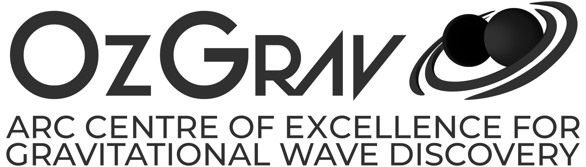

menu
close
menu
close


Tristan Than, Kim Yan
Thank you to Kim Yan for his support in debugging and fixing numerous issues within the program, especially the raycasting, orbital, and UI mechanics. Thank you to David Barnes for assisting us with textures and lighting effects. Thank you to the 2025 ASTRAL team for playtesting the game while it was in development to provide feedback for updates and fixes. Thank you to Prof. Matthew Bailes for supervising this project, and Akhil Jaini for providing helpful suggestions for new features. This project is funded by A.S.T.R.A.L.
The main goal of this project is to create an interactive activity that can be used as an educational tool for kids to learn astronomy through the lens of ancient astronomers such as Galileo, Kepler, and Herschel. Using the Unity Game Engine and assets from numerous satellite databases and astrophysics organisations, a closely accurate simulation of the night sky as seen from Melbourne was developed, in which planets follow realistic movement patterns against a constantly moving backdrop of stars and constellations. You can click on planets to "discover" them, and watch an animation of the planet orbiting the sun and rotating on its axis, after which you get to name your discovery and have it appear in the sky. The program is still in development with many more features on the way, but Mk. I is currently in use as part of the Astrotour with a large touchscreen display.

We acknowledge and pay respects to the Elders and Traditional Owners of the land on which our program runs.
© 2025. astrophysics, supercomputing, technology, research analytics, technology program (astral). all rights reserved. designed and developed by rudra sekhri